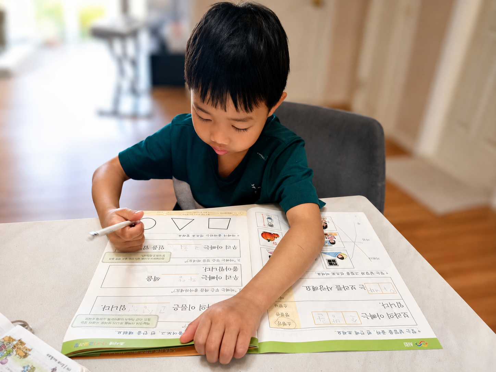
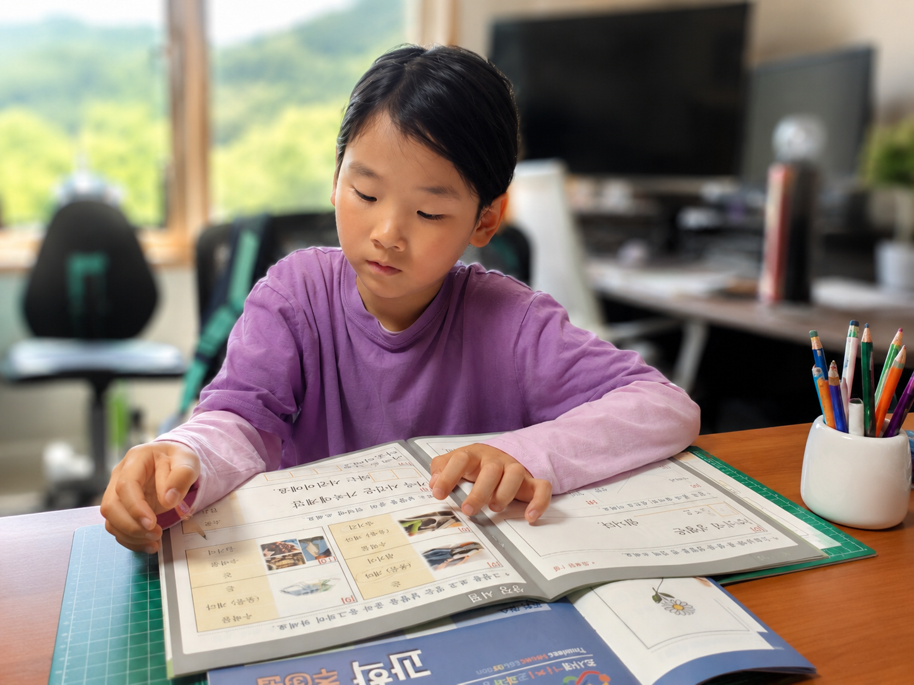
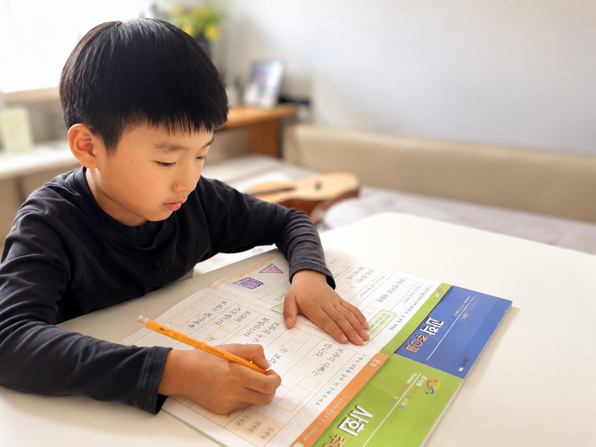
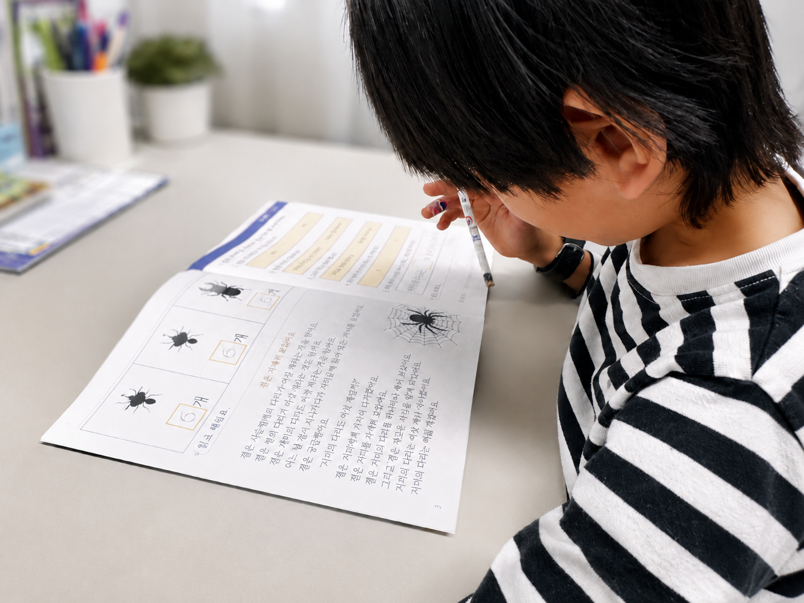
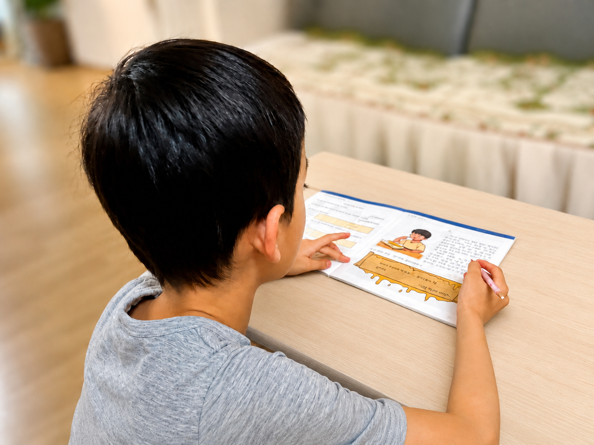
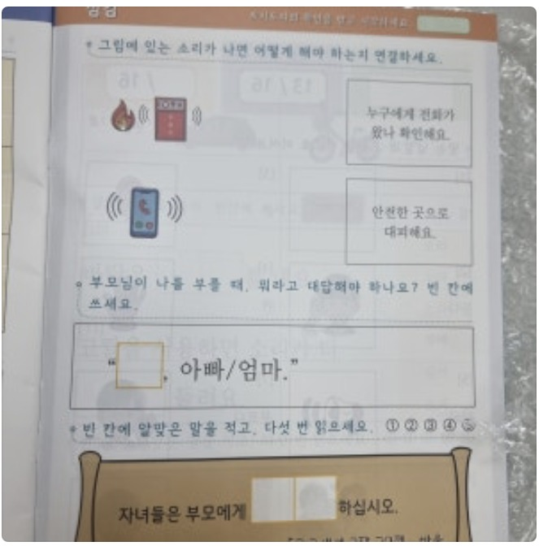
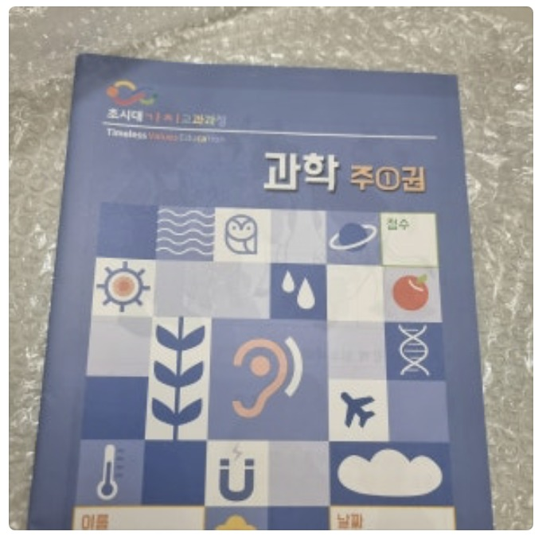

Learning Moments
함께 자라는 순간들
초시대가치교과서를 사용하는 실제 아이들의 모습입니다.






Trust
교재를 사용하는 사람들의 이야기
교재를 사용하는 분들의 이야기를 먼저 모아두는 영역입니다.
★★★★★
아이가 너무 즐겁게 해서 하루 분량보다 더 하려고 할 만큼 몰입도가 높고, 실험이 곳곳에 있어 배우는 재미가 큽니다. 내용과 연결된 말씀도 자연스럽게 익힐 수 있어, 아이가 부담 없이 개념을 받아들이는 점이 특히 좋았다는 후기였습니다.
- 중간 점검과 마지막 점검이 있어 놓치지 않고 꼼꼼히 배울 수 있어요.
- 부모와 함께 이야기하며 수업하기 좋아 관계 형성에도 도움이 됩니다.
- 책 자체가 알차서 8살 자녀의 첫 시작 과학책으로 딱이라는 반응이었습니다.
아이와 함께 천천히 풀어가면 다른 공부도 편안하게 이어갈 수 있게 도와주는 책이라는 평가였습니다.



★★★★★
홈스쿨링을 하면서 교재를 찾던 중, 성경적 가치가 담긴 교재라는 점이 가장 마음에 들었습니다.
접기 / 펼치기
홈스쿨링을 하며 국어·영어 외에도 다른 과목의 교재를 사용하고 싶었는데, 기독교 세계관이 100% 녹아 있는 교재는 우리나라에서 찾기 어려운 현실입니다. 초시대 가치 교과과정의 사회, 과학에서는 말씀도 중간중간 들어가 있는 것은 당연하고, 아이들에게 지식 전달뿐만 아니라 성경의 가치관을 자연스럽게 배울 수 있어서 좋은 교재라고 생각합니다. 특히 다른 교재들을 사용하면 세상의 가치관이 들어가지 않을까 몇 차례 멈칫했던 부모의 검수가 필요한데, 이 교재는 안전하게 믿고 사용할 수 있는 교재라 정말 마음에 들어요. 심지어 성경말씀이 아니더라도 사회, 과학의 교과에서 하나님의 사랑이 느껴진달까요. 꾸준히 발전해주셨으면 좋겠습니다.
★★★★★
아이와 함께 하기 아주 잘 만들어진 교재라서, 다음 학기 교재도 계속 기다리고 있습니다.
접기 / 펼치기
1학년 1학기에 이어 2학기도 구입했어요. 가뭄의 단비같은 교과서입니다. 앞으로 계속 출간 기다립니다.
★★★★★
하나님 중심의 내용이 아이와 저 모두에게 감동과 유익을 주는 교재입니다.
접기 / 펼치기
하나님 중심적이고 재미있고 유익한 내용으로 구성해 주셔서 아이와 즐겁게 배우고 있습니다. 내용이 너무 좋아서 어른인 저에게도 감동이 됩니다. (예: 헬렌 켈러 이야기, 운동주의 시 등등) 아이에게 여러 번 읽어보게 하고 있는데 초시대 가치가 자녀의 마음에 잘 새겨지기를 기도하게 됩니다. 자연스럽게 하나님과 예수님을 우리의 삶과 연결시켜 주기 때문에 성경적 세계관이 자라나는 데 도움이 될 것 같습니다. 꼭 저희처럼 홈스쿨 가정이 아니더라도 자녀와 천천히 해 보시면 분명 많은 걸 배우고 나눌 수 있으리라 생각합니다.
★★★★★
사회성과 인성을 균형 있게 지도해주는 구성이라 부모의 고민을 덜어준 교재입니다.
접기 / 펼치기
초시대 가치 교과과정 사회 1-1권까지 한 세트로 되어 있는 교재는 자녀의 사회성과 인성을 어떻게 하면 올바르고 건강하게 균형 있게 지도해 줄 수 있을까 하는 저의 고민을 시원하게 해소해 주었습니다. 자녀가 접하게 되는 관계 속에서 나와 다른 사람을 이해하고 배려하는 마음을 배워가고 있습니다. 9살 아들의 놀이에 맞는 다양한 이야기와 그림, 그리고 간단한 실험과 게임들로 구성된 교재는 아이들이 학습에 흥미를 가지고 쉽게 접근할 수 있었습니다. 하루 10분, 2~3페이지 교재를 함께 펼치면서 아들과의 의사소통이 이전보다 훨씬 더 풍성해지는 유익도 얻었습니다. 자녀가 앞으로 만나게 될 수많은 사회와 관계 속에서 나와 타인을 건강하게 지키고 받아들이기를 원하는 부모님들께 이 교재를 강력 추천합니다.
앞으로 사진이 더 추가되면 같은 카드 형식으로 이어 붙이면 됩니다.